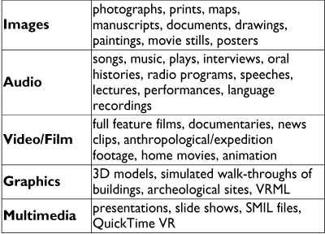
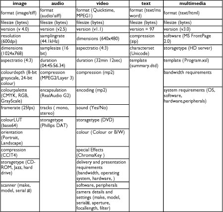
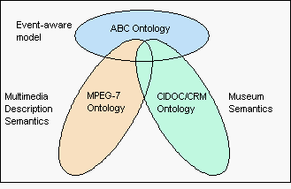
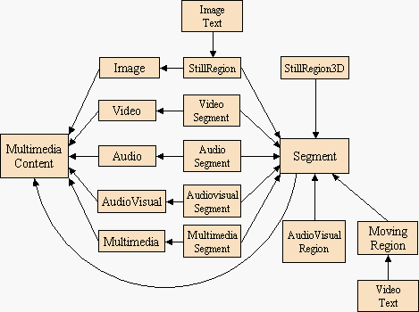
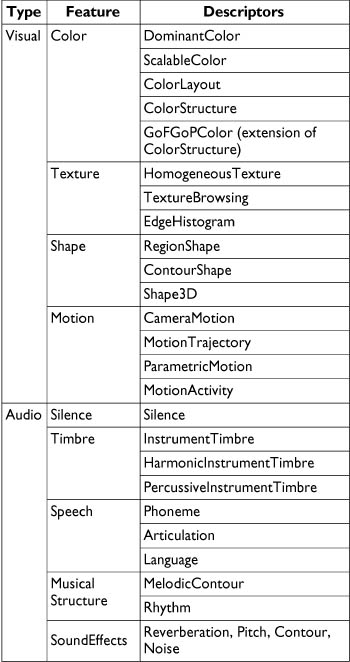
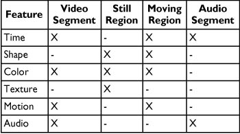
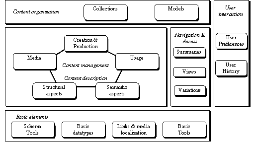
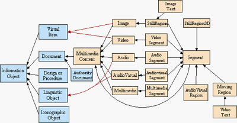
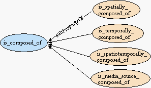

Archives & Museum Informatics
2008 Murray Ave.
Suite D
Pittsburgh, PA
15217 USA
info@archimuse.com
www.archimuse.com
|
Search A&MI |
Join
our
Mailing List.
Privacy.
Combining the CIDOC CRM and MPEG-7 to Describe Multimedia in Museums
Jane Hunter, DSTC Pty Ltd, University of Queensland, Australia
Abstract
This paper describes a proposal for an interoperable metadata model, based on international standards, which has been designed to enable the description, exchange and sharing of multimedia resources both within and between cultural institutions.
Domain-specific ontologies have been developed by two different ISO Working Groups to standardize the semantics associated with the description of museum objects (CIDOC Conceptual Reference Model) and the description of multimedia content (MPEG-7) - but no single ontology or metadata model exists for describing museum multimedia content. This paper describes an approach which combines the domain-specific aspects of MPEG-7 and CIDOC-CRM models into a single ontology for describing and managing multimedia in museums. The result is an extensible model which could lead to a common search interface and the open exchange, sharing and integration of heterogeneous multimedia resources distributed across cultural institutions.
Keywords: Multimedia, Metadata, Interoperability, MPEG-7, CIDOC-CRM
1. Introduction
Multimedia provides museums with a rich paradigm for capturing, communicating and preserving cultural information. It offers new capabilities for structuring, interpreting and communicating knowledge, and the significance of artifacts within museum collections through the use of digital video, audio, images, graphics and animation. Making collections available in digital form, both in-house and through networks, provides museums with a tremendous opportunity to meet their educational mandate. When linked together over networks, museum multimedia databases become even more valuable as cross-cultural resources for educational and research purposes.
In addition, the potential to re-use multimedia content to create new intellectual property, has further accelerated the growth in the size and number of institutional multimedia databases. Existing multimedia objects are being combined and reused to generate complex, interactive multimedia, hypermedia, virtual reality displays and participatory exhibitions. This has led to a demand for systems and tools which can satisfy the more sophisticated requirements for storing, managing, searching, accessing, retrieving, sharing and tracking complex multimedia resources.
Metadata is the value-added information which documents the administrative, descriptive, preservation, technical and usage history and characteristics associated with resources. It provides the underlying foundation upon which digital asset management systems rely to provide fast, precise access to relevant resources across networks and between organisations. The metadata associated with multimedia objects is infinitely more complex than simple metadata for resource discovery of simple atomic textual documents and the problems and costs asssociated with generating such metadata are correspondingly magnified.
Metadata standards enable interoperability between systems and organizations so that information can be exchanged and shared. Standardized metadata models have been developed to describe museum objects (CIDOC Conceptual Reference Model) (CIDOC Conceptual) and to describe multimedia content (MPEG-7) (ICS) but no standards currently exist for specifically describing museum multimedia content. Hence the key goal of this project is to analyze and evaluate each of these existing standards and to determine a way to merge the two ontologies to generate a standardized model for describing museum multimedia content. Such a model, which is capable of supporting the exchange of information between existing collection management systems (for physical artefacts) and emerging digital asset management systems would enable knowledge and resources to be shared, re-used and exchanged to a much greater extent than is currently possible both within and between museums.
Hence in the remainder of this paper we describe both the CIDOC/CRM and MPEG-7 metadata models. We then analyze them both to determine the overlaps, intersections and differences. Based on this analysis we hope to be able to determine how the models can best be merged to combine the two domain-specific vocabularies of MPEG-7 and CIDOC/CRM, without introducing semantic inconsistencies or redundancies. The final outcome is in essence, a single, machine-understandable, extensible ontology designed to support the description and management of multimedia resources within museums.
2. The Nature of Multimedia in Museums
2.1 Types of Multimedia in Museums
Audiovisual or "multimedia" content within museums is highly
diverse and varies widely in origin, genre, purpose, media type, format,
quality, age, context and the reason for its cultural significance or
retention within a museum or collection. Multimedia in museums can include
everything from disintegrating maps on paper to full feature films on
DVD. Within the scope of this paper we are referring to: images, audio,
video, multimedia, graphics and animation - in both analog and digital
form. Table 1 below provides an overview of the typical constitution of
multimedia collections within a museum

Table 1: Overview of Museum Multimedia Types
In most cases, it is the semantic content, which is depicted or recorded on the multimedia resource which is of value i.e., the resource records an event, place, person, object or concept which is of cultural, historical, geographic or educational importance. For some multimedia resources, the cultural or historical significance lies with the medium or recording technology e.g., the earliest photographs, film, video and audio recordings. In some cases, the multimedia object is valuable because of the person who captured or recorded it (e.g., home movie collection of John F. Kennedy) or because it is part of a larger collection or bequest or it is exemplary of a particular genre, era or technique. In many cases, both the semantic content and the context, agents, technique and medium are all of importance and need to be
Often multimedia content has been generated for preservation and dissemination purposes. The multimedia resource may be a digital surrogate of the original culturally significant museum artifact which is too valuable or fragile to be handled or is inaccessible for reasons of location. In many situations, the multimedia resources are created as an alternative visual representation (image, model) of a physical museum artifact or as a replacement for earlier analog and digital formats which are becoming obsolescent.
Hence in addition to the typical bibliographic information, the metadata for multimedia resources may need to describe detailed formatting information, structural or segmentation information (temporal, spatial and spatio-temporal segments), semantic information (description of the objects/people/places/events which are recorded) and the event history and rights information. A detailed description of the metadata requirements for multimedia in museums is provided in the next section.
2.2 The Metadata Requirements for Multimedia in Museums
The metadata associated with multimedia resources can be classified into a number of different categories:
- Bibliographic metadata - this includes information about the resource's creation/production (date, place) and the individuals or organizations involved (e.g., producer, director, and cast) and the resource's classification information (e.g., title, abstract, subject, and genre).
- Formatting metadata - this includes information about the format, encoding, storage and system requirements associated with the resource. Table 2 below shows the formatting metadata typically recorded for different media types.

Table 2: Typical Format Metadata for Different Media Types
- Structural metadata - this provides information about the structural decomposition of the multimedia resource into spatial, temporal or spatio-temporal segments (scenes, shots, frames, image regions) and the relationships between these segments.
- Content metadata - this provides indexes to the actual content which is recorded or depicted within the multimedia resource. Content metadata can vary from natural language descriptions of the people, objects, places or events which are depicted to the low level audio or visual features such as colour histograms or volume.
- Events and rights metadata - this is information describing the life history of the resource. It includes everything from acquisition and relocation events to the reformatting, editing, repackaging and distribution events to the metadata attribution events to the usage, copyright agreements, and permission events.
A number of projects have developed or are developing metadata models for multimedia in museums (Gabriel, 2001; The TOKEN 2000) or for historical audiovisual collections (The ECHO). These projects are either developing their own application-specific data models and vocabularies, or choosing one of the existing standards (MPEG-7 or CIDOC/CRM). None have considered the approach of merging ontologies from the museum domain and the multimedia domain into a single ontology.
2.3 A Typical Example
Consider the following example which is typical of multimedia content held by museums or archives: a film owned by the Museum of Victoria which contains unedited footage of Australian Aboriginal tribal ceremonies filmed by anthropologist Baldwin Spencer between 1901 and 1912. Below is the catalogue item from ScreenSound Australia's online catalogue. In 1999, the original film was copied to digital format (MPEG-1) by the National Film and Sound Archive for the purpose of preservation.
Example 1
In Sections 3.2 and 4.2 below we compare the abilities of the CIDOC CRM and MPEG-7 to describe museum multimedia, by describing this example using their domain-specific vocabularies.
3. The CIDOC/CRM
3.1 Overview of the CIDOC CRM
The "CIDOC object-oriented Conceptual Reference Model" (CRM), was developed by the ICOM/CIDOC Documentation Standards Group to provide an 'ontology' for cultural heritage information. Its primary role is to serve as a basis for mediation of cultural heritage information and thereby provide the semantic 'glue' needed to enable wide area information exchange and the integration of heterogenous resources between cultural institutions.
The CIDOC CRM is presented as an object-oriented extensible data model, expressed in RDF Schema (RDF Schema Spec 2000). Figure 1 illustrates the class hierarchy for the CIDOC CRM, as generated by the SIS knowledge base (ICS). The detailed specification of the CIDOC CRM Version 3.2 which includes detailed descriptions of the class and property definitions, hierarchies and relationships, is available from (Crofts, 2002).

Figure 1 - The CIDOC/CRM Class Hierarchy
In order to understand and evaluate the CIDOC CRM's ability to describe multimedia resources, we apply it to the example in Section 2.3.
3.2 A CIDOC CRM Description of the Example
Example 2
Together with an analysis of the class and property hierarchies provided by the CIDOC CRM, this exercise reveals that the CIDOC CRM's strengths lie in its ability to describe:
- Identification information;
- Acquisition and ownership information;
- Physical movement, location and relocation information;
- Physical attributes and features - dimensions, marks, visual items, material, sections, physical location etc.;
- Historical events - CIDOC CRM supports rich semantic descriptions of concepts or events - both real world events, as well as the events which occur in the life cycle of a resource, and those events which are depicted in the visual information objects.
- However the CIDOC CRM is limited in its ability to describe digital objects and particularly digital multimedia or audiovisual content. The following requirements are inadequately supported:
- Formatting attributes (encoding, storage, system requirements) for digital images, audio, video, text and multimedia such as those shown in Table 1 are not currently supported;
- It is possible to define sections of physical objects using spatial measurements or coordinates and the temporal location of Events or Periods using the Date and TimeSpan entities - but not temporal, spatial or spatio-temporal locations within non-physical digital media;
- Physical features can be described but not visual or audio features such as colour histograms, regions, shape, texture, volume etc.;
- Hierarchical or sequential summaries of audiovisual content which specify keyframes, scene changes or key videoclips, are not supported
The CIDOC CRM provides the is_documented_in property to record the relationship of a culturally significant physical or real-world artefact or event to its visual/audio/audiovisual recording, which is classed as a Document. However there is no explicit support for the different media types in CIDOC/CRM. Because the CIDOC CRM is designed to provide an extensible underlying framework, it may be possible to improve support for multimedia descriptions, through the addition of MPEG-7 multimedia-specific sub-classes and sub-properties to existing CIDOC/CRM superclasses and super-properties. We investigate this approach in Section 5.
4. MPEG-7 - the Multimedia Content Description Interface
4.1 An Overview of MPEG-7
The Moving Pictures Expert Group (MPEG), a working group of ISO/IEC, is expected to shortly release the final standard for MPEG-7 (MPEG-7 Overview), the "Multimedia Content Description Interface", a standard for describing multimedia content. The goal of this standard is to provide a rich set of standardized tools to enable both humans and machines to generate and understand audiovisual descriptions which can be used to enable fast efficient retrieval from digital archives (pull applications) as well as filtering of streamed audiovisual broadcasts on the Internet (push applications). MPEG-7 can describe audiovisual information regardless of storage, coding, display, transmission, medium, or technology. It addresses a wide variety of media types including still pictures, graphics, 3D models, audio, speech, video, and combinations of these (e.g., multimedia presentations).
MPEG-7 provides:
- a core set of Descriptors (Ds) that can be used to describe the various features of multimedia content;
- pre-defined structures of Descriptors and their relationships, called Description Schemes (DSs).
Initially MPEG-7 definitions (description schemes and descriptors) were expressed solely in XML Schema [9-11]. XML Schema proved ideal for expressing the syntax, structural, cardinality and datatyping constraints required by MPEG-7. However semantic interoperability is necessary to enable systems to exchange data (e.g., metadata descriptions), to understand the precise meaning of that data and to translate or integrate data across systems or from different metadata vocabularies. Hence it was recognized that there was a need to formally define the semantics of MPEG-7 terms; and to express these definitions in a machine understandable, interoperable language. RDF Schema (RDF Schema Spec 2000) was the obvious choice due to its ability to express semantics and semantic relationships through class and property hierarchies and its endorsement by the W3C's Semantic Web Activity (W3C). Consequently the Adhoc Group for MPEG-7 Semantic Interoperability was established and an MPEG-7 ontology was developed and expressed in RDF Schema and DAML+OIL extensions (Hunter Adding, Hunter An ROF 2001). The extensions provided by DAML+OIL (DAML+OIL) were necessary to satisfy certain requirements such as the need for multiple ranges and sub-class specific constraints. The basic class hierarchy of MPEG-7 content and segments is shown in Figure 2 below e.g., the MPEG-7 class VideoSegment is a subclass of both Video and Segment.

Figure 2 - MPEG-7 Multimedia Segment Class Hierarchy
The relationships of the Segment types to other segment types and multimedia entities are dependent on the allowed types of decomposition. Multimedia resources can be segmented or decomposed into sub-segments through 4 types of decomposition:
- Spatial Decomposition - e.g., spatial regions within an image;
- Temporal Decomposition - e.g., temporal video segments within a video;
- Spatiotemporal Decomposition - e.g., moving regions within a video; or by
- MediaSource Decomposition - e.g., the different tracks within an audio file or the different media objects within a SMIL presentation
Associated with each of the subclasses in Figure 2 are various properties which define permitted relationships between the segment classes corresponding to specific structural or organizational description schemes and the permitted audio, visual and audiovisual attributes associated with different types of multimedia segments.
The visual and audio features which may be associated with multimedia and segment classes are listed in Table 3. Associated with each of the visual and audio features is a choice of descriptors, also illustrated in Table 3. Precise details of the structure and semantics of these descriptors are provided in ISO/IEC 15938-3 FCD Multimedia Content Description Interface - Part 3 Visual and ISO/IEC 15938-3 FCD Multimedia Content Description Interface - Part 4 Audio (1so, 2001).

Table 3 - MPEG-7 Visual and Audio Features and their Corresponding Descriptors
Only particular visual and audio descriptors are applicable to each segment type. Table 4 below illustrates the association of visual and audio descriptors to different segment types. The MPEG-7 RDF Schema (Hunter, Adding; Hunter, An ROF) specifies the constraints on these property-to-entity relationships.

Table 4 - Relationships between Segment Types and Audio and Visual Descriptors
descriptors, MPEG-7 provides standardized Description Schemes which combine the base classes and properties above, into pre-defined structured relationships (ISO…-5, 2001. Figure 3 provides an overview of the organization of MPEG-7 Multimedia DSs into the following areas: Basic Elements, Content Description, Content Management, Content Organization, Navigation and Access, and User Interaction.

Figure 3 - Overview of MPEG-7 Multimedia DSs (ISO/IEC)
These different MPEG-7 DSs enable descriptions of multimedia content which cover:
- Information describing the creation and production processes of the content (director, title, short feature movie);
- Information related to the usage of the content (copyright pointers, usage history, broadcast schedule);
- Media information of the storage features of the content (storage format, encoding);
- Structural information on spatial, temporal or spatio-temporal components of the content (scene cuts, segmentation in regions, region motion tracking);
- Information about low level features in the content (colors, textures, sound timbres, melody description);
- Conceptual, semantic information of the reality captured by the content (objects and events, interactions among objects);
- Information about how to browse the content in an efficient way (summaries, views, variations, spatial and frequency sub-bands);
- Organization information about collections of objects and models which allow multimedia content to be characterized on the basis of probabilities, statistics and examples;
- Information about the interaction of the user with the content (user preferences, usage history).
In the next section we generate an MPEG-7 description of the example in Section 2.3, which illustrates the use of the CreationInformationDS, the MediaInformationDS and the TemporalDecompositionDS, to provide meaningful structure to the metadata description.
4.2 An MPEG-7 Description of the Example
Example 3 is an MPEG-7 description of the example in Section 2.3.
5. Comparison of the CIDOC/CRM and MPEG-7 Ontologies
5.1 Overlaps, Intersections and Differences
A comparison of the MPEG-7 and CIDOC CRM ontologies and their descriptions of the same resource above, reveals the following:
- Both metadata models are capable of describing the creation, production and classification information associated with a resource. Mappings between these components of the two models is possible;
- The CIDOC CRM is more focussed on describing physical museum artefacts and real world events from an epistemiological perspective. CIDOC CRM provides an ontology which allows the decomposition of knowledge available in data records into atomic propositions that are context free, interpretable when stand-alone but can easily be compiled into an integrated knowledge base;
- MPEG-7 is more focused on precise, fine-grained content-based descriptions of multimedia content, particularly digital multimedia, to enable the automated search and retrieval or filtering and retrieval of relevant multimedia content using standardized descriptions;
- Because the CIDOC CRM vocabulary is based on a hierarchical object-oriented model in which Events and Activities are core entities, it provides a better underlying framework for recording the events, changing attributes and dynamic relationships associated with a resource.
5.2 Merging the Ontologies
Since CIDOC CRM is designed to provide a top level set of classes and properties which can act as attachment points for domain-specific metadata ontologies, it makes sense to use the CIDOC CRM as the foundation and to extend it with MPEG-7 specific components, to add multimedia metadata capabilities. The obvious attachment point for the MPEG-7 class hierarchy is the CIDOC CRM Document class, as shown in Figure 4 below.

Figure 4 - Extending the CIDOC CRM Class Hierarchy with MPEG-7 Multimedia
Subclasses
(click for a detailed image)
The CIDOC CRM provides an is_composed_of property which can be extended through RDF Schema sub-properties to define the structural or segmentation metadata associated with multimedia resources. Spatial, temporal, spatio-temporal and media-source decompositions are all provided through this approach, as illustrated in Figure 5.

Figure 5 - Adding MPEG-7 Segmentation properties to CIDOC-CRM
The CIDOC CRM Time-Span and Place classes need to be sub-classed to enable MediaTime and MediaPlace classes to be defined - these are required in order to specify temporal, spatial and spatio-temporal locators within audiovisual resources.
Further extensions to the CIDOC CRM which are required for adequate multimedia description include the provision of formatting properties (Table 2) and visual and audio features/descriptors (Table 3), associated with multimedia and segment entities.
Some formatting metadata can be accommodated by the existing Dimension class (e.g., file size, frame dimensions). But formatting information such as encoding and storage medium could be attached through a new Format class and a new has_format property, similar to the existing Dimension class e.g.,
Example 4
Audio and visual descriptors could be provided through the provision of two new classes, VisualFeature and AudioFeature. Their respective MPEG-7 descriptors as outlined in Table 3 could be defined as sub-classes. The properties has_visual_feature and has_audio_feature would be required to associate these new classes/sub-classes to the relevant Multimedia Document types, as specified in Table 4.
Based on the proposals described here, an RDF Schema representation of the MPEG-7 extensions to the CIDOC CRM, has been developed and is available (RDF Schema Rep).
6. Conclusions and Future Work
6.1 Conclusions
In this paper we have analyzed the strengths and weaknesses of the CIDOC CRM and MPEG-7 ontologies in the context of providing a metadata model for describing and managing museum multimedia resources. Based on this analysis, we have described an approach to merging the two models by using the CIDOC CRM as the underlying foundation and extending it through the addition of MPEG-7-specific sub-classes and sub-properties to provide support for multimedia concepts and descriptions. The outcome is a single machine-understandable ontology (in RDF Schema) which can be used to provide the underlying model for describing multimedia in museums and thus facilitate the exchange, sharing and integration of heterogeneous multimedia information between cultural institutions.
6.2 Future Work
Having developed the model, the next step is to test, evaluate and refine it by applying it to the description and management of real collections of multimedia resources within museums. We plan to do this through the development of a test-bed using resources provided by the Smithsonian's National Museum of the American Indian CRC.
In 2001, two workshops were held by the DELOS Working Group on Ontology Harmonization (Doerr) to discuss and compare the CIDOC CRM and ABC ontologies (Lagaozi, Hunter, 2001). Both of these ontologies have been designed to facilitate semantic interoperability between metadata vocabularies from different domains. A third workshop is planned for June 2002, and the anticipated outcome will be a common merged model. Assuming that this eventuates, then future work will involve determining how the multimedia specific concepts of MPEG-7 can be attached to or accommodated within this merged ontology.
Acknowledgements
The work described in this paper has been carried out as part of a Smithsonian Fellowship funded by the Queensland Government and the Smithsonian Institute. Additional funding has been provided by the Cooperative Research Centre for Enterprise Distributed Systems Technology (DSTC) through the Australian Federal Government's CRC Programme (Department of Industry, Science and Resources).
Thanks also to the other members of the DELOS Working Group on Ontology Harmonization, and especially Martin Doerr, both for Figure 1, and for his patient and detailed explanations of the CIDOC CRM.
References
CIDOC Conceptual Reference Model, http://cidoc.ics.forth.gr/
Crofts, N. Dionissiadou, I., Doerr, M., Stiff, M. (editors), "Definition of the CIDOC object-oriented Conceptual Reference Model , Feb 2002 (version 3.2.1) http://cidoc.ics.forth.gr/docs/cidoc_crm_version_3.2.1.rtf
DAML+OIL, March 2001. http://www.daml.org/2001/03/daml+oil-index
Doerr, M. DELOS Working Group on Ontology Harmonization, Workshop Reports, http://www.metadata.net/harmony/Collaboration.htm
The ECHO European CHronicles On-line Project http://pc-erato2.iei.pi.cnr.it/echo/
Gabriel, D., Ribeiro, C. "A Metadata Model for Multimedia Databases", ICHIM 01, Milan, September 2001 http://www.archimuse.com/ichim2001/abstracts/prg_100000544.html
Hunter, J. "Adding Multimedia to the Semantic Web - Building an MPEG-7 Ontology", http://archive.dstc.edu.au/RDU/staff/jane-hunter/swws.pdf
Hunter, J. "An RDF Schema/DAML+OIL Representation of MPEG-7 Semantics", MPEG, Document: ISO/IEC JTC1/SC29/WG11 W7807, December 2001, Pattaya
ICS FORTH, "The Semantic Index System (SIS)", http://www.ics.forth.gr/proj/isst/Publications/paperlink/SIS-descr.ps.gz
ISO/IEC 15938-5 FCD Information Technology - Multimedia Content Description Interface - Part 5: Multimedia Description Schemes, March 2001, Singapore
ISO/IEC 15938-3 FCD Information Technology - Multimedia Content Description Interface - Part 3: Visual, March 2001, Singapore
[ISO/IEC 15938-4 FCD Information Technology - Multimedia Content Description Interface - Part 4: Audio, March 2001, Singapore
Lagoze, C., and Hunter, J. "The ABC Ontology and Model", Journal of Digital Information, Volume 2, Issue 2, November 2001, http://jodi.ecs.soton.ac.uk/Articles/v02/i02/Lagoze/
MPEG-7 Overview, http://mpeg.telecomitalialab.com/standards/mpeg-7/mpeg-7.htm
[RDF Schema Representation of the MPEG-7 Extensions to the CIDOC CRM, http://metadata.net/harmony/MPEG-7_CIDOC_CRM.rdfs
RDF Schema Specification 1.0, W3C Candidate Recommendation 27 March 2000. http://www.w3.org/TR/rdf-schema/
The TOKEN2000 project http://dbs.cwi.nl:8080/cwwwi/owa/cwwwi.print_projects?ID=78
W3C Semantic Web Activity http://www.w3.org/2001/sw/
XML Schema Part 0: Primer, W3C Recommendation, 2 May, 2001, http://www.w3.org/TR/xmlschema-0/
XML Schema Part 1: Structures, W3C Recommendation, 2 May 2001, http://www.w3.org/TR/xmlschema-1/
XML Schema Part 2: Datatypes, W3C Recommendation, 2 May 2001, http://www.w3.org/TR/xmlschema-2/